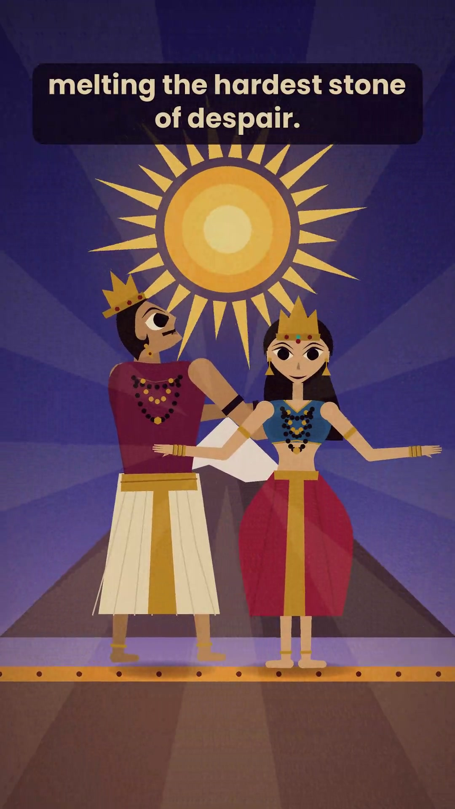
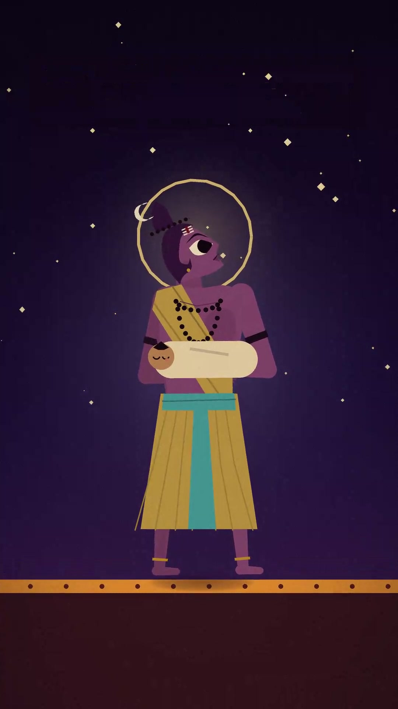
Shiva's Rage: The Tandava Over Sati's Loss
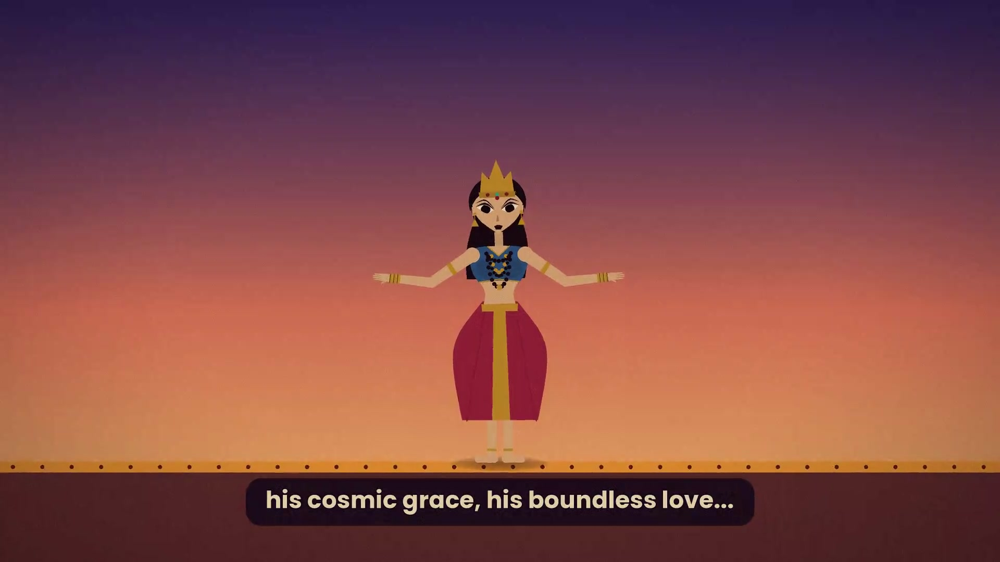
Sati's Self-Immolation: The Fire of Wrath
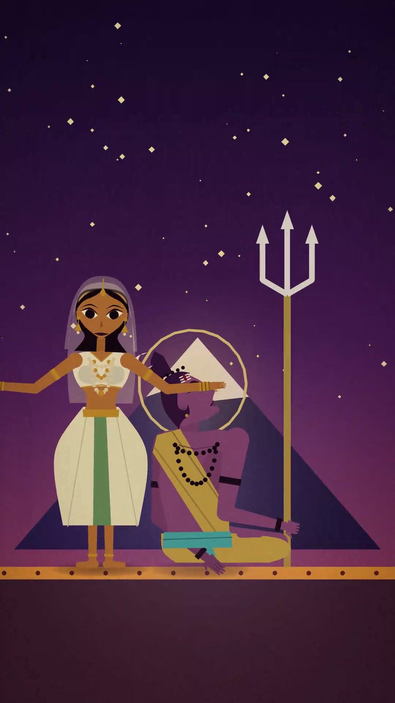
Sati at Daksha's Yajna: The Uninvited Arrival
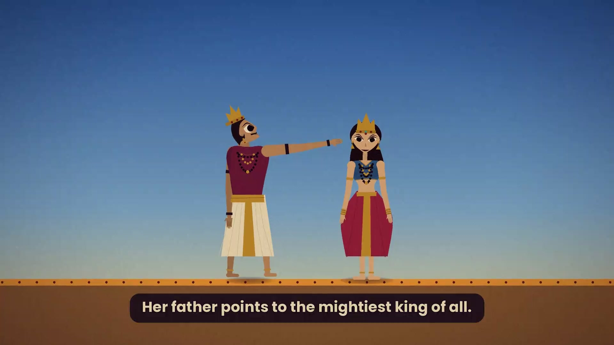
Sati's Choice: Choosing Shiva Over Kings
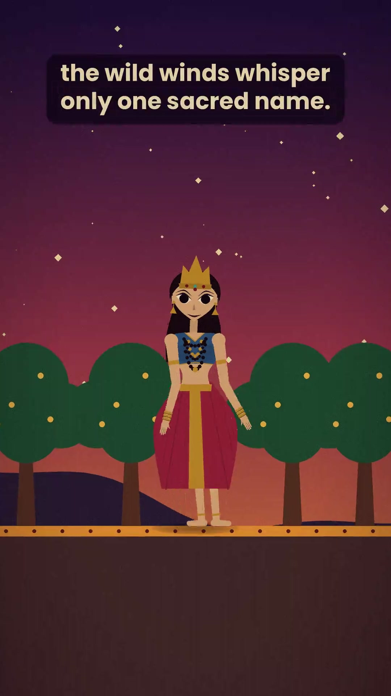
Sati's Devotion: Falling in Love with Lord Shiva
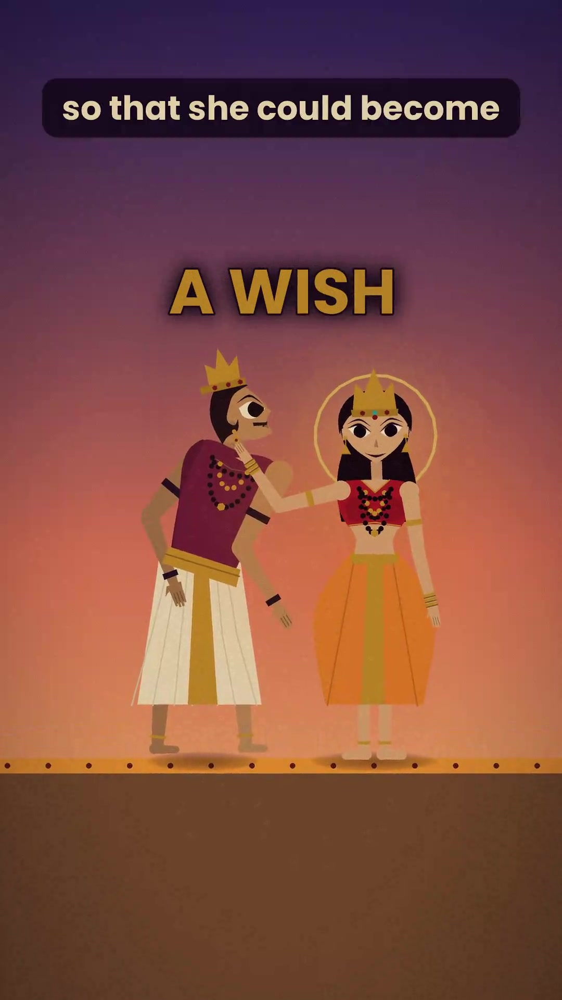
The Birth of Sati: How Goddess Shakti Became Daksha's Daughter
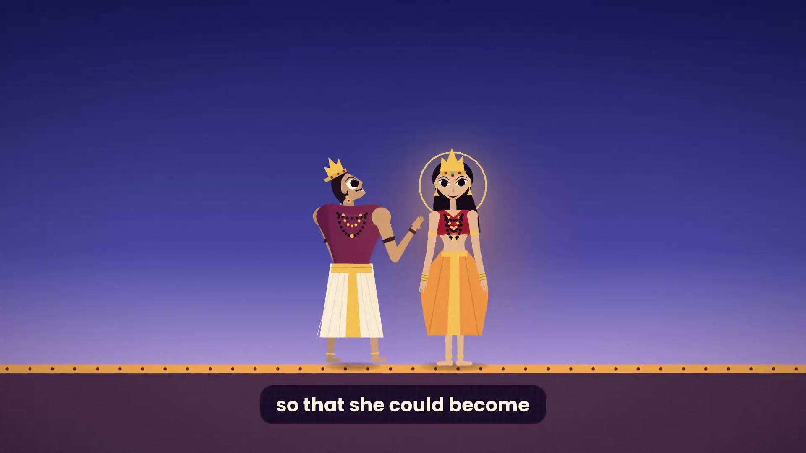
The Birth of Sati: How Goddess Shakti Became Daksha's Daughter
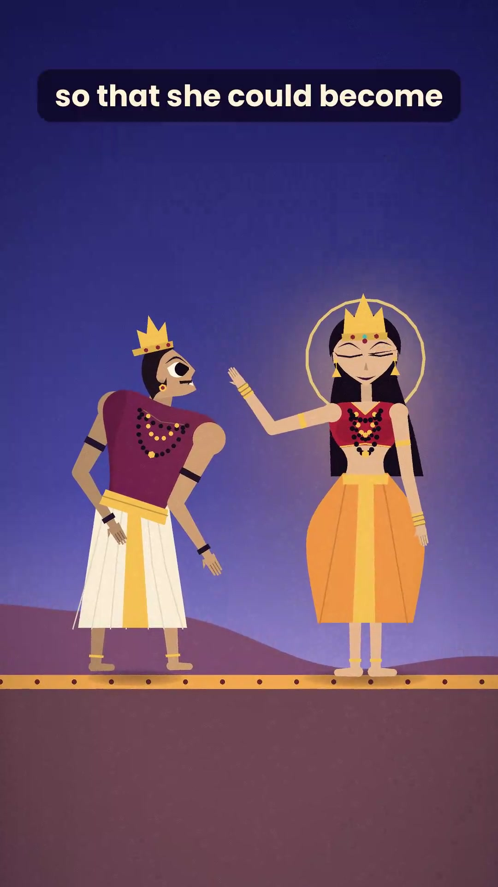
The Birth of Sati: Goddess Shakti Becomes Daksha's Daughter
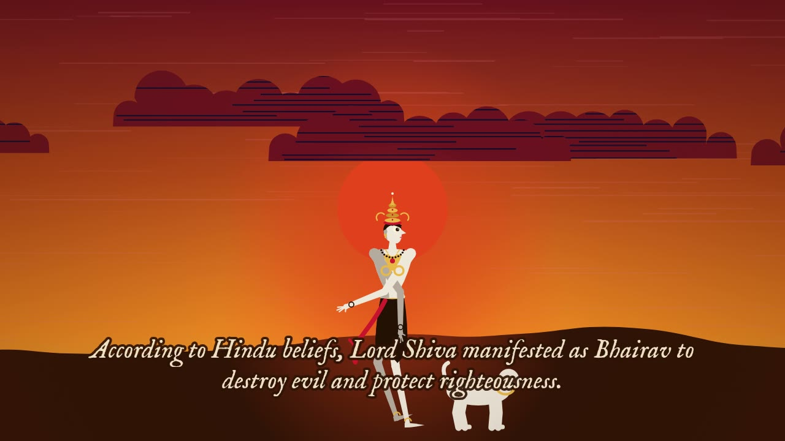
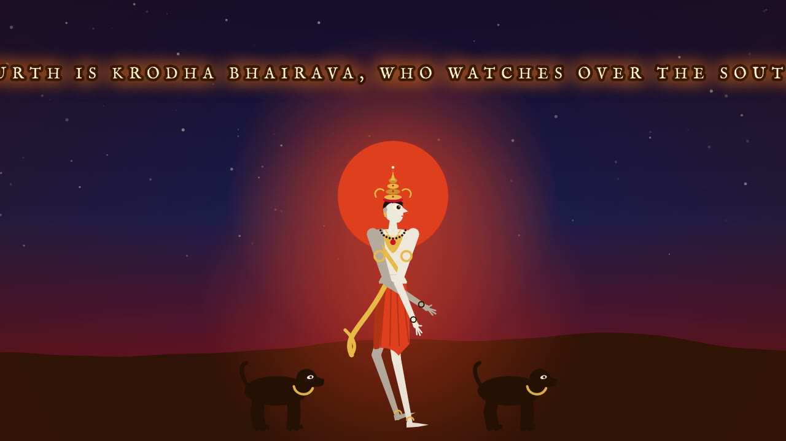

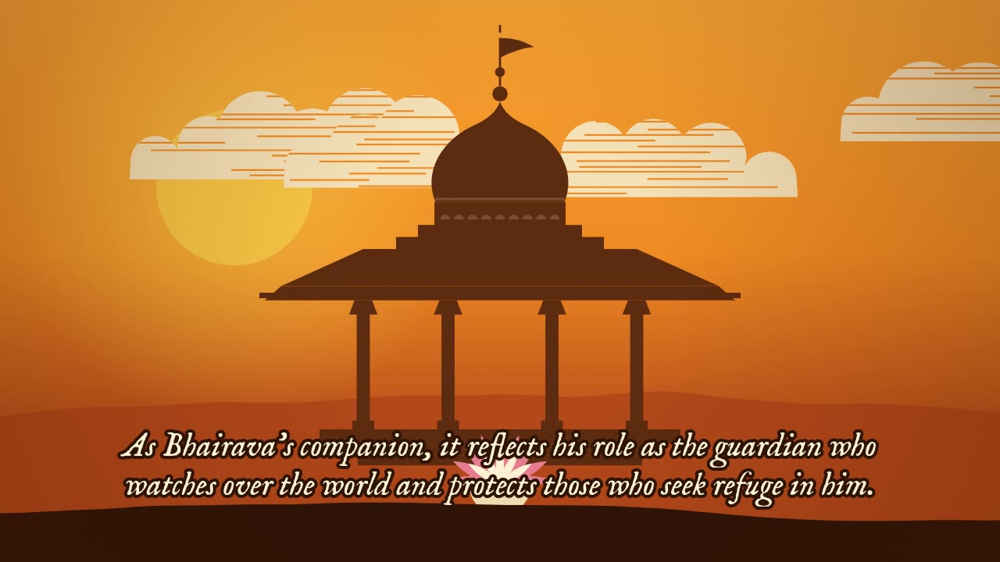

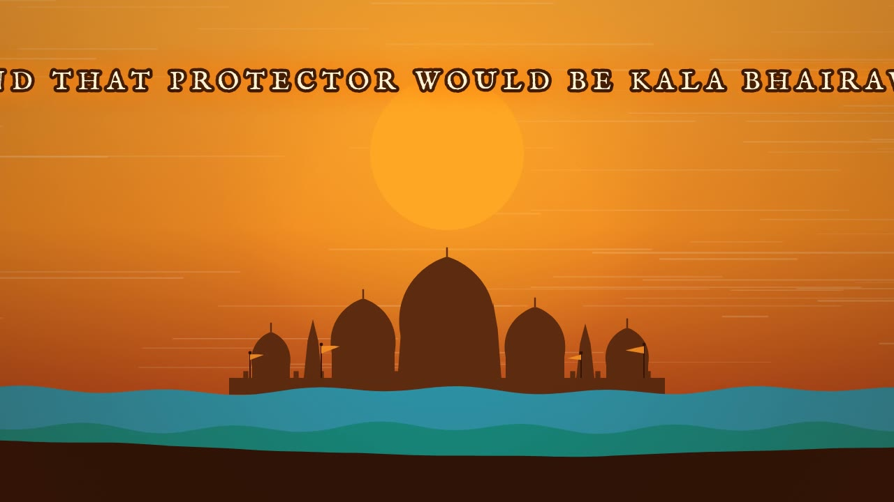
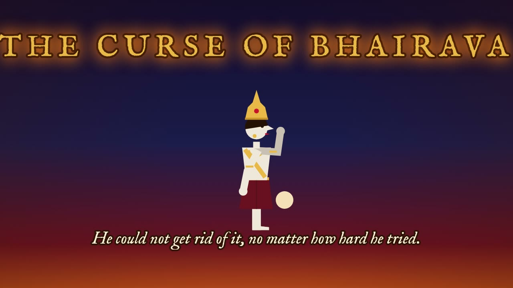